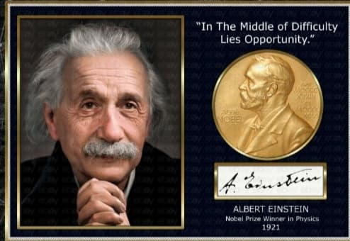

About Him
Albert Einstein[a] (14 March 1879 – 18 April 1955) was a German mathematician and physicist who developed the special and general theories of relativity.With his passion for inquiry, Einstein is generally considered the most influential physicist of the 20th century.
Major Achievements
-

- Theory of Special Relativity (1905):
- Photoelectric Effect (1905)
- Theory of General Relativity (1915)
- Mass-Energy Equivalence (E=mc^2) (1905)
In his 1905 paper, “On the Electrodynamics of Moving Bodies,” Einstein introduced the special theory of relativity. This theory revolutionized our understanding of space and time by proposing that the laws of physics are the same for all observers in uniform motion.
In the same year as his special theory of relativity, Einstein published another groundbreaking paper on the photoelectric effect.
on his special theory of relativity, Einstein developed the general theory of relativity, which is a theory of gravitation.
In the same year as his other major contributions, Einstein formulated the famous equation E=mc^2, where E represents energy, m represents mass, and c represents the speed of light in a vacuum.
"Information is not knowledge. The only source of knowledge is experience. You need experience to gain wisdom." – Albert Einstein
Learn more on Wikipedia.